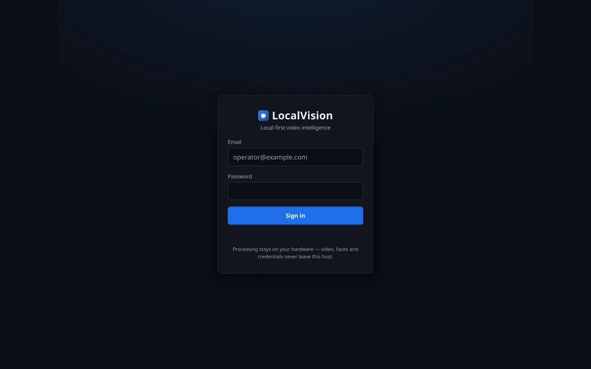
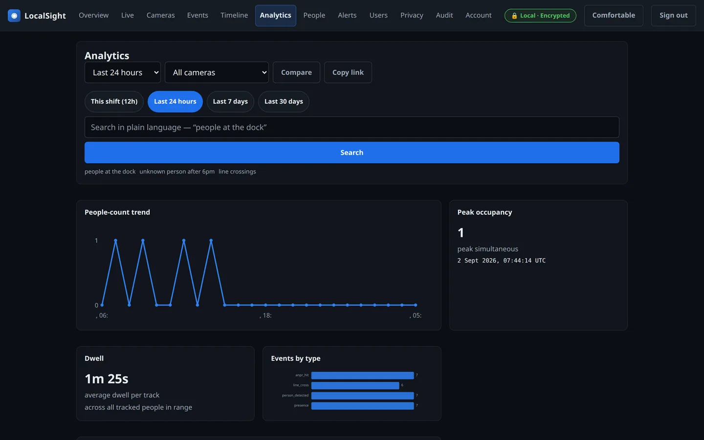
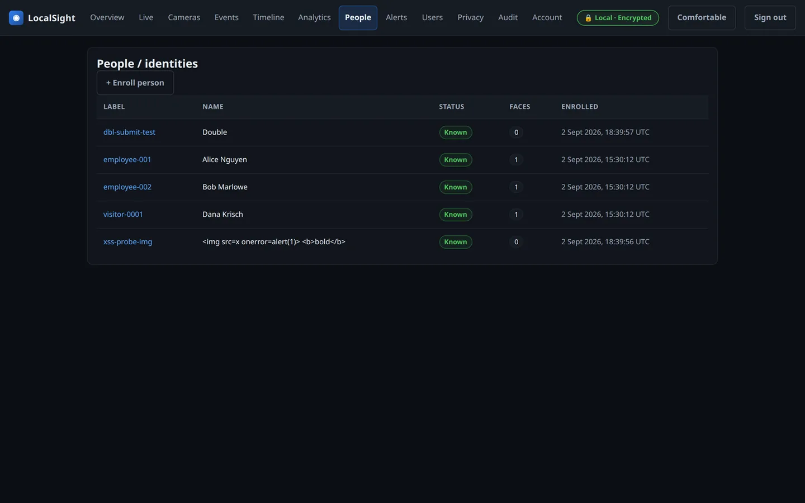

End-user documentation for operators of a LocalSight deployment: logging in, managing cameras, watching live and recorded video, working with events and alerts, and configuring privacy controls.
- Installing or upgrading for the first time →
docs/operations/installation.md - Something is broken →
docs/operations/troubleshooting.md - Day-to-day operations (health, retention, alerts, backup) →
docs/operations/runbook.md - Developer / engineering-agent documentation →
AGENTS.md
The screenshots in this guide are real captures of the running product (demo dataset, admin role). Files live in
docs/img/; regenerate them any time with the console running and a screenshot tool — the states match the e2e suite's visual baselines.
Contents
- Getting set up (first time)
- Logging in
- Dashboards at a glance
- Managing cameras - Privacy masks - The Cameras screens (Wave 3) - The mask editor - The rules editor - Behavior rules - Per-camera retention - Removing a camera
- Live view
- Overview (the NOC screen)
- Analytics — incl. natural-language search
- Sorting, exporting and unambiguous time (M1)
- Your account (M2)
- Working faster (M3)
- Keyboard shortcuts
- Density
- Events, search & clips
- Alerts — incl. the Alerts screen
- People & enrollment — incl. the Identities screen
- Users & the Privacy dashboard (Wave 3)
- What is encrypted, and where
(Wave 5 note: the Privacy view also carries the opt-in UI-marks card described above.)
Getting set up (first time)
This guide assumes LocalSight is already running. If it isn't, the full
install path — prerequisites, FFmpeg, a Python or Docker Compose install, and
a first-run verification checklist — is in
docs/operations/installation.md. In short:
- Install (5–10 min): generate secrets with
python scripts/gen_env.py, then start the API (uvicorn apps.api.main:app) and the worker (python -m apps.worker) as two processes. The dashboard is served at/. - Sign in with the bootstrap admin recorded during install (see Logging in below).
- Add a camera via Cameras → + Add camera and watch the wizard's verify step pull a real frame before you commit.
- Confirm ingestion: the camera's status dot flips to streaming within ~30 s, events appear, and the Timeline fills with recording coverage.
- Turn on what you need: behavior rules, alert routes, and (with a documented lawful basis) identity enrollment.
If a step fails, docs/operations/troubleshooting.md
is organized by the exact symptom.
Logging in

- Browse to the deployment URL (the dashboard is served at
/). - Sign in with the account your administrator created (first boot creates
the bootstrap admin from
BOOTSTRAP_ADMIN_EMAIL/BOOTSTRAP_ADMIN_PASSWORD). - Sessions stay signed in while the tab is open: the dashboard silently renews its 15-minute access token via a rotating refresh token. If your session does end (tab closed past renewal, token revoked), you'll see a "Session expired" notice on the sign-in screen — that's normal.
- If your account has MFA enabled, the code field appears automatically after you enter your email and password.
- Multi-factor authentication (TOTP-compatible authenticator apps) can be enabled per-account under Account → MFA. Admin accounts should enable it.
Login errors are specific: "Incorrect email or password" vs. "Account
temporarily locked — try again in a few minutes" (the lock triggers after
MAX_LOGIN_ATTEMPTS failures for LOCKOUT_MINUTES).
Dashboards at a glance

The web UI is a single-page dashboard served from the deployment URL:
- Overview — stat cards, camera strip, 24h event trend, recent events, alert feed; auto-refreshes every 15 s while visible.
- Live — camera grid with wall mode (see Live view).
- Events — detections and analytic events with filters by camera, time, identity status.
- Timeline — a day of recording/presence coverage per camera (SVG ribbon).
- Cameras — camera status, health, resolution, and last-seen.
- People — identity enrollment and list.
- Audit — every sensitive action (logins, exports, camera changes) with
who/when/source IP (requires the
audit:viewpermission).
Views show loading skeletons, empty states with next-step hints, and inline error states with Retry — no blank screens. What you see depends on your role's permissions; endpoints you lack permission for return 403.
Managing cameras

Cameras are added by an administrator (camera:configure permission) via
POST /api/cameras or the dashboard. Stream URLs (RTSP, with or without
embedded credentials) are validated against the deployment's egress allowlist,
then encrypted at rest — they are never returned by the API.
Quick discovery helpers:
- POST /api/cameras/onvif/discover — WS-Discovery on the camera VLAN.
- POST /api/cameras/presets/build — build a vendor RTSP URL from a preset
(Axis, Hanwha, Hikvision, Dahua, Reolink, Bosch, TP-Link VIGI, ...).
- POST /api/cameras/from-nvr — provision every channel of a TP-Link VIGI NVR.
Privacy masks
Privacy masks exclude regions of the frame from all processing: a detection whose center falls inside a mask — or whose box overlaps a mask by ≥50% — is dropped before tracking. Masked areas produce no detections, no snapshots, no events, no recordings metadata — nothing downstream.
Configure on a camera (PUT /api/cameras/{id}):
{
"privacy_masks": [
{"x": 0.0, "y": 0.0, "w": 0.3, "h": 0.25},
{"x": 0.6, "y": 0.7, "w": 0.2, "h": 0.3}
]
}
Coordinates are normalized (0.0–1.0) against the full frame, origin top-left. Typical uses: a neighbor's property line, a public sidewalk beyond the fence, a monitor screen in view.
Verify masks took effect: the change applies to new frames immediately (worker picks it up on camera reload); run a test detection and confirm no events appear from the masked region.
The Cameras screens (Wave 3)
Cameras in the left navigation is now a full management surface for
operators with camera:view (management actions additionally require
camera:configure; read-only roles see the same screens without edit
controls — the UI hides what you may not do, it never shows you a button
that will 403):
- Grid — every camera as a card: live status, resolution, FPS, health, and the count of active privacy masks. Click a card for its detail view.
- Detail tabs — Streams, Masks, Rules, Retention, Health:
- Streams: primary + substream URLs. These are write-only: the
field shows
🔒 encrypted — write-only, existing URLs are never echoed back. Enter a new URL only to replace it. - Masks: the visual mask editor (below).
- Rules: the visual rules editor (below).
- Retention: per-camera day counts (blank = system default, which the card states explicitly — the UI never invents a number the backend didn't declare).
- Health: FPS, drop rate, last-seen worker heartbeat.
- + Add camera — a three-step wizard: ONVIF discovery (or manual RTSP
entry) → credentials → verify, which attempts to pull one real frame
before you commit. If the camera is unreachable you see the honest
failure (e.g.
503 — stream unreachable) and can fix the URL instead of discovering a dead camera a day later.
The mask editor
On a camera's Masks tab, drag on the snapshot to draw a rectangle, pick a reason (compliance record — required), then Add. Reasons are the audit trail for why a region is excluded: neighbor's property, public sidewalk, no consent for this area, and so on. The editor draws on the camera's live snapshot when available; if the camera is offline it says so and stays editable (coordinates are normalized, so masks re-anchor on any resolution).
Snapshots for the canvas are fetched through short-lived signed URLs (300 s) — the same scheme as event media, because browser image loads cannot carry your session token.
The rules editor

On the Rules tab: pick a rule type, click on the snapshot to place points (two points for a tripwire, three or more for a zone polygon — it closes itself), set the per-type threshold (dwell seconds, direction, count), then Add rule → Save. Saving replaces the camera's rule list; the editor warns when the camera carries legacy/unknown rules so the replace is never a silent surprise. Every rule is validated against the same schema the worker enforces before the save leaves your browser.
Replay & verdict — the card below the editor runs a saved frame fixture
(tests/replays/ JSON format) through the real detection engine as a
dry-run and renders the verdict: a PASS/FAIL banner against the fixture's
expect block, one lane per rule with fired/blocked marks, and the
per-rule fire counts. By default it replays the editor's current rules —
including unsaved edits — so you verify a rule's behavior before saving it.
Nothing is persisted and no alert is sent (rules:configure required).
Behavior rules
Each camera can carry JSON rules evaluated per frame by the worker over
tracked objects (rules:configure permission). Six rule types exist, and
every type accepts the shared grammar knobs cooldown_sec (minimum gap between
fires of the same rule), min_size (ignore tracks smaller than this normalized
area) and labels (restrict to these platform labels):
| Rule type | Fires when | detail carried on the event |
Default labels | Type-specific knobs |
|---|---|---|---|---|
line_cross |
A track crosses the segment, optionally in one direction only | direction |
person, vehicle |
a, b |
intrusion |
A track enters the polygon | zone |
person, vehicle |
min_dwell_sec |
loitering |
Presence inside a zone exceeds the dwell threshold | dwell_sec, zone |
person |
dwell_sec |
object_left |
A stationary object appears and persists — and its later removal | stationary_sec |
bag, package |
stationary_sec, require_unattended |
crowd |
Track count in a zone exceeds the threshold | count, zone |
person |
threshold |
stopped_vehicle |
A vehicle stops inside a zone past the threshold | stopped_sec |
vehicle, truck, bus, motorcycle, bicycle |
stopped_sec, max_speed |
The object_left rule emits two event kinds: object_left when an
unattended item appears, and object_removed when it is taken again.
{
"rules": [
{"type": "intrusion", "rule_id": "backyard", "zone": [[0.5,0.3],[1.0,0.3],[1.0,1.0],[0.5,1.0]], "cooldown_sec": 10},
{"type": "line_cross", "rule_id": "entry-tripwire", "a": [0.5,0.0], "b": [0.5,1.0], "direction": 1},
{"type": "stopped_vehicle", "rule_id": "no-stopping", "zone": [[0.0,0.6],[1.0,0.6],[1.0,1.0],[0.0,1.0]], "stopped_sec": 30}
]
}
direction: 1 left-to-right, -1 right-to-left, omitted = both. All
coordinates are normalized [0,1], so geometry drawn in the editor maps
directly onto model output.
Testing rules before you trust them (R3.5 replay tester)

Rules are the loudest thing the system does, so they are testable three ways, all through the same rule engine — no test-only code paths:
- In the UI — the Replay & verdict card below the rules editor runs a saved
fixture through the real engine as a dry-run and renders a PASS/FAIL banner
against the fixture's
expectblock, one lane per rule with fired/blocked marks. It replays the editor's current rules, including unsaved edits. - In the API —
POST /api/rules/testtakes a fixture body and returns the verdict; nothing is persisted and no alert is sent. - In the terminal / CI —
python scripts/rule_replay.pyreplays the bundled golden fixtures intests/replays/(16 manifests covering the cooldown, direction, dwell, abandoned-object and stopped-vehicle edge cases).--listshows them; the pytest suite collects them automatically.
A fixture is a description, the rules, an ordered list of frames (each a
timestamp plus the tracks present), and an exhaustive expect block — where a
rule must fire, where it must not, and that absent behaviour stays absent.
See tests/replays/README.md for the format.
The daily alert budget (R3.6)
Each camera has an optional cap on how many analytic alerts it fans out per UTC
day (alert_budget_per_day on the camera, or the platform default). The cap
gates notifications only — the underlying event, clip and snapshot are
always stored, so a suppressed alert is still a searchable event and evidence is
never lost. GET /api/alerts/budget shows, per camera, the limit, how many
alerts have been used today, and what remains; the counter is the analytic-event
count since UTC midnight, which is the same durable number the worker seeds its
own gate from, so the UI and enforcement can never disagree. Suppressions are
counted and surfaced (alerts_budget_suppressed_total), so "quiet because
healthy" stays distinguishable from "quiet because budgeted". A limit of 0
means unlimited — the default, so an upgrade changes nothing until you set one.
Per-camera retention
PUT /api/cameras/{id} accepts a retention object (e.g.
{"days": 30}) to override global policy for that camera's data. Global
defaults: recordings 7 days, events 30 days, snapshots 14 days, embeddings
90 days, audit 365 days.
Removing a camera
On a camera's detail page, the Remove this camera card (requires the
camera:configure permission) takes a camera out of the configuration:
- ingestion stops — any live view of that camera stops immediately, and the AI worker winds that camera's pipeline (frames + recording) down within ~30 s;
- the camera's recordings, events, snapshots, detections and tracks are deleted, and the recording/snapshot objects are removed from storage;
- the action is typed-confirm: you must type the camera's exact name before Remove permanently unlocks, and Cancel backs out without any API call;
- the removal is audited, and the audit entry survives the removal.
There is no undo — re-adding the same camera starts a fresh configuration.
Live view

Live view streams each camera's substream, transcoded locally to LL-HLS. The RTSP URL and camera credentials never reach your browser.
- Open Live in the dashboard: every camera is a tile. Pick a layout (1×1, 2×2, 3×3) from the toolbar — your choice is remembered for the tab.
- Each tile runs the secure ticket flow automatically
(
POST /api/live/ticket→GET /api/live/{camera_id}/play?ticket=...); the player points at/live-media/{camera_id}/index.m3u8. - Wall mode (toolbar button or
F) cycles the tiles fullscreen for NOC displays; arrow keys step tiles,Escexits. - If a camera can't stream (offline, no transcoder available), the tile says so — "Stream unavailable" — instead of showing a dead player.
- The ■ button (or
POST /api/live/{camera_id}/stop) ends that transcode immediately.
You don't need to stop streams manually — the server reaps transcodes that nobody has watched for 5 minutes (configurable) or that have run for 4 hours (hard ceiling), and it stops everything on restart. This keeps CPU proportional to actual viewing.
Overview (the NOC screen)

The Overview refreshes itself every 15 seconds while visible and pauses when the tab is hidden:
- Camera strip — one chip per camera with its status dot; click to jump straight to that camera's live tile.
- Events — last 24 hours — a bar sparkline of event volume.
- Recent events — the latest five detections; click one to open its detail drawer.
- Alert feed — the most recent analytic (non-presence) events: rule triggers and ANPR.
- Health — per-component status with model names.
Analytics

The Analytics view answers "what happened here" over archived data — one time-range (24h / 7d / 30d) and one camera filter shared by every widget:
- People-count trend — an SVG line of occupancy buckets over the range.
- Peak occupancy — the highest simultaneous count and when it happened.
- Dwell — average time per tracked person; the card states plainly that it's an average, not a distribution (the API reports one number, the UI doesn't invent a histogram).
- Events by type — SVG bars, one row per event type.
- Detection density — a heatmap painted from tracked positions; the brighter the cell, the more visits. Honest when empty: "no detections in this range".
Natural-language search
The search box on Analytics accepts plain-language queries — "people at the dock", "unknown person after 6pm" — and ranks matching events by similarity with a score per result. Example chips fill the box in one click; your last five queries are kept for the tab (session only — the history is an investigation aid, not a tracking artifact).
Results click through to the event drawer like any event row. The current ranker is the deterministic reference embedder — honest about being functional rather than production-accurate; a real VLM swaps in behind the same API without a UI change.
GET /api/analytics/search?q=… is the API; it accepts camera and time
filters too.
Sorting, exporting and unambiguous time (M1)

Every data table (Events, Audit) is sortable: click a column header to sort by it, click again to reverse; the arrow shows the direction and the sort runs server-side over the whole result set — not just the visible page.
Export CSV (Events and Audit toolbars) downloads exactly what the
current filters and sort produce — every export lands in the audit log,
and formula-style cells (leading =, +, -, @) are neutralized so
opening the file in a spreadsheet is safe.
Times are unambiguous everywhere. The server sends UTC with an
explicit offset, and the console renders 2 Sept 2026, 15:30:12 UTC
(dense tables show the short form with a full ISO tooltip). No more bare
clocks that could mean two wall-times to two people.
The Audit view additionally filters by user, action, result and a date window, and paginates — compliance review no longer means scrolling.
Forensic search — attributes, plates, saved searches
The Events view carries a Forensic search card (visible to every
role; saving needs a role with search:save):
- Attributes — search the AI's clothing tags on tracks: type a key
(
jacket,color,hat…) and optionally a value (red). Every hit shows the camera, time and the tags, and "Show in events" jumps to that camera's feed so you land in the surrounding footage. - Plate — type a plate exactly as it reads (
ab-12 cdis fine); the lookup normalizes it (AB12CD) and finds every ANPR sighting. Plates are stored encrypted and matched through a keyed hash, so the console never shows plate material — only where and when it was seen. Partial plates are not searchable by design; use the event feed for those. - Saved searches — name the current search and Save; it appears as a chip above the results (click to re-run, ✕ to delete). Saving and deleting are audit-logged; every user sees only their own searches.
Your account (M2)

The Account view (last nav item) is self-service security:
- Password — rotate your own password (12+ characters). Other devices are signed out automatically; every rotation is audited.
- Two-factor authentication — enroll with any TOTP authenticator (Google Authenticator, 1Password, Aegis). After enrollment your login asks for a 6-digit code. To switch devices, ask an administrator for an MFA reset, then re-enroll.
- Active sessions — every device where you're signed in; revoke any of them individually. Admins can revoke all of a user's sessions from the Users view ("Sign out all").
- Timezone — choose how times are displayed to you (stored in UTC, rendered in your choice; per-browser, never uploaded).
Working faster (M3)

- Ctrl-K command palette — jump to any view, camera, person, or recent event by typing part of the name. Full keyboard path: ↑↓ select, Enter go, Esc close.
- Bulk selection (Events) — checkbox rows or select-all; the bulk bar exports exactly the selected events (audited like every export).
- Copy link (Events, Audit, Analytics) — copies a URL that reproduces the current filters AND sort. "Send me what you see" is a link, not a screenshot.
- Compare (Analytics) — deltas of headline numbers against the previous equal-length window ("this shift vs the shift before"), plus one-click range presets (This shift, 24h, 7d, 30d).
- Compact density — the header toggle now tightens tables for real (~36px rows, 24px inline controls per the WCAG 2.2 target-size exception; the tooltip explains the reasoning).
Keyboard shortcuts
The console is fully operable without a mouse:
| Keys | Action |
|---|---|
g then o / l / e |
Overview · Live · Events |
g then t / c / a |
Timeline · Cameras · Analytics |
g then u / p / d |
Users · Privacy · Audit |
/ |
Focus the events search |
↑ ↓ then Enter |
Select an event, open it |
e |
Export the open event (audited) |
f |
Fullscreen wall mode (Live view) |
Esc |
Close drawer / overlay / wall |
? |
The shortcut overlay |
Ctrl-K / Cmd-K |
Command palette — jump anywhere |
Density
The Comfortable/Compact button in the header switches row density (40 px vs 32 px). The choice is per-browser (localStorage) and applies to every table and card — NOC operators on 24h shifts can fit more rows; evaluators can see everything larger.
Events, search & clips

- Browse: the dashboard's Events view (or
GET /api/events) with filters (camera, identity status, time range, confidence floor). Filters live in the URL — copy it to hand a colleague the exact same view. - Investigate: click any event row (or press ↑/↓ and Enter) to open the
detail drawer — snapshot with detection box, clip playback, camera and
identity context, and Export evidence: an audited, signed, 5-minute
download link copied to your clipboard. Export requires an operator role
(
events:export); every export lands in the audit log. - Event detail API:
GET /api/events/{id}— includes short-lived signed URLs to the snapshot and any recorded segment (default 300 s expiry; links are HMAC-signed and expire — don't archive them). - Clips:
GET /api/events/{id}/clipassembles every recording segment overlapping the event window (requiresevents:export; the action is audited). - Natural-language search:
GET /api/analytics/search?q=person+by+the+gate— a reference (deterministic) semantic search until a real VLM is staged. - Timeline: the Timeline view renders a day of activity per camera as an
SVG ribbon; hover for the wall-clock time, click to jump into Events for
that camera. The same data is available via
GET /api/timeline?date=YYYY-MM-DD&camera_id=....
Rule and ANPR events carry a detail object (direction, dwell, counts;
for ANPR: the encrypted plate and its anonymized hash — see
What is encrypted).
Alerts

Administrators (alerts:manage) configure routes: channel (webhook,
email, mqtt, push), matching rule_type (or *), optional camera
scope, and cooldown_sec to suppress re-firing storms.
- Webhook URLs are SSRF-validated; the server refuses to POST to private ranges unless the operator allowlists them.
- Alert payloads sent to third-party channels are filtered: they carry the rule context (direction, dwell, count, zone) but never ciphertext like the encrypted plate — that data stays on the host.
POST /api/alerts/testsends a synthetic alert through every configured route so you can verify delivery end-to-end.- The daily alert budget (R3.6) caps alert notifications per camera per
UTC day. It defaults to unlimited; set
ALERT_BUDGET_PER_CAMERA_PER_DAYfor the platform default or override one camera in the Alerts screen. A camera that hits its cap stops notifying but keeps every detection, clip and searchable event — evidence is never a budget item.
The Alerts screen (Wave 3)
The Alerts view (operators and up) has four parts:
- Routes table — one row per route: channel pill, rule type, camera scope (or all cameras), cooldown, enabled/paused state. Test-fire pushes a synthetic alert through that route; Delete is two-step.
- Deliveries feed — the last deliveries with timestamps, so you can see the route actually firing, not just configured.
- Daily alert budget — one row per camera showing today's usage against
its cap (
unlimitedwhen no cap is set), with an inline editor foralert_budget_per_day(0= unlimited,1-10000). Saving re-renders the Alerts view; the worker picks the new cap when it next (re)starts that camera's pipeline. - + Add route — the create form. The
configJSON field shows a per-channel hint (a webhook wants{"url": ...}, email wants an address) and a note that channel secrets are write-only, like every credential in the product.
(Honesty note: pausing a route currently requires editing its config file and reloading — the pause control tells you this rather than pretending.)
People & enrollment

Enrollment (biometric identity recognition) is off by default and should be enabled only with a lawful basis. When enabled:
- Create a person (
POST /api/persons,person:enrollpermission). - Enroll reference embeddings — stored envelope-encrypted, carrying their model version.
- Recognition runs at
AI_RECOGNIZE_INTERVAL_SECintervals per track and labels presence eventsknown/uncertain/unknownagainst the similarity threshold.
Deleting a person is a complete erasure (GDPR-style): their embeddings
cascade-delete with the person row. Events keep their identity_status label
but the link to the person is removed.
The Identities screen (Wave 3)
The People view (renamed Identities in the nav) lists every enrolled person with their faces-enrolled count, status, and enrollment date — camera-count chips make the enrollment effort visible at a glance.
The person detail shows each reference embedding's metadata only: model version, dimension, quality score, created date. The photo itself is never stored (only the embedding), and the API says so in plain text rather than hiding it.
- Upload a reference photo — multipart upload; the server extracts the embedding and discards the image bytes. Re-uploading appends a new reference (more references = better matching).
- Delete person — the typed-confirm pattern: type the person's exact label to unlock the button, because this is a full GDPR erasure (embeddings cascade) and deserves a speed bump.
Users & the Privacy dashboard (Wave 3)

Users
The Users view (user:manage, admins) lists accounts with role, MFA state,
and active status. Creating a user enforces the 12-character minimum password
(hashed with Argon2id on the host). Delete is typed-confirm on the
account's exact email — and it revokes all their sessions immediately, which
the confirm zone says out loud. Your own row is marked · you and cannot
be deleted from the UI. The roles legend maps each role to its permissions
(from the server's RBAC tables, not a hand-maintained copy).
Privacy
The Privacy view is the resident-audit surface, four cards:
- Where your data lives — engine, storage root, crypto vault state: the data map in one glance.
- Retention by camera — per-camera overrides and the system defaults, stating plainly when a camera just inherits the default.
- Mask inventory — every privacy mask across every camera with its reason, plus a count of cameras with no masks yet (a nudge, not a scolding).
- Data-subject erasure — search a person by label, then typed-confirm erasure (same cascade as the Identities screen).
- UI marks (opt-in) — off by default. When you turn it on, the dashboard keeps a short local list of marks in that browser tab (view loads and their timing, slow views, page errors) to help you spot a problem on YOUR console. It is stored in memory only, never written to disk, never sent anywhere, and Download JSON hands the file to you — LocalSight's own servers never see it, because there are none.
What is encrypted, and where

| Data | At rest | In transit to you |
|---|---|---|
| Camera RTSP URLs | Envelope-encrypted (per-record data key under the deployment KEK) | Never returned by the API |
| Plate numbers (ANPR) | Event.detail.plate_enc (envelope-encrypted) + plate_hash (anonymized digest) |
Only via authenticated host API |
| Enrollment embeddings | Envelope-encrypted | Never returned |
| Snapshots / recordings | Storage keys encrypted; objects served via short-lived signed URLs | Signed URL (≤ expires_sec) |
| Alert route secrets | Encrypted at rest | Never returned |
| Passwords | Argon2id hashes | n/a |
| Audit log | Append-only rows (retention-bounded) | audit:view permission |
Signed URLs are HMAC-SHA256 over key:exp with the deployment master key —
they cannot be forged, only issued by the server, and they expire.